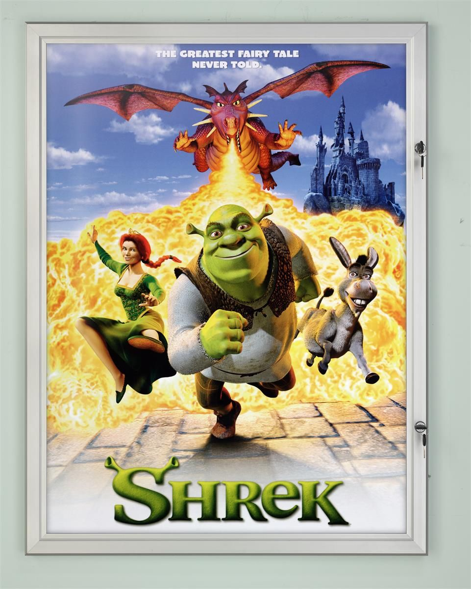

Strona domowa Jana Kowalskiego!
Mój ulubiony serial tothe boyz
Moja ulubiona książka to Harry poter
Mój ulubiony wykonawca muzyczny to Sting.
Sting naprawdę nazywa się Gordon Matthew Sumner i urodził się w 1951 roku w Newcastle.
Dorastał w zwyczajnej, angielskiej rodzinie, która utrzymywała się z fizycznej pracy obojga rodziców.
Jego ojciec był inżynierem, choć pracował jako mleczarz, a matka fryzjerką. Gordon dorastał z młodszym rodzeństwem - bratem Philipem i dwoma siostrami Angelą oraz Anitą.
Mój ulubiony film to "Shrek"

Moje ulubione książki to:
Mały Książę
Imię róży
Wojna i pokój